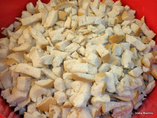
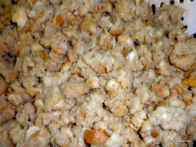
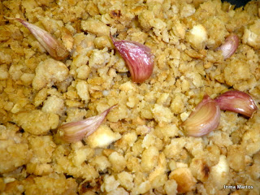
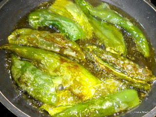
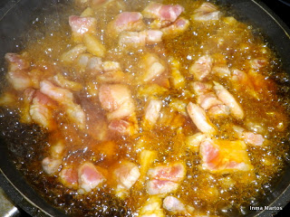
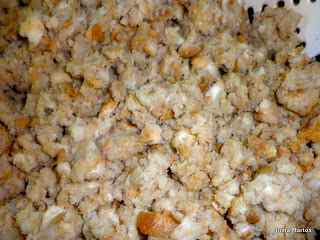
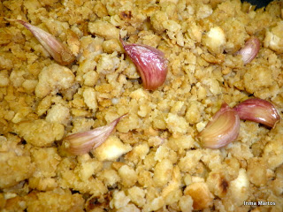
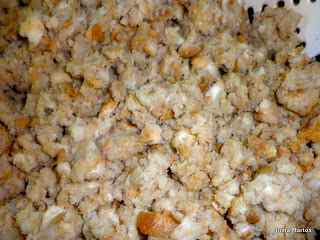
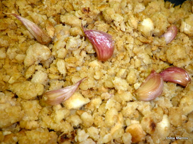

Las migas, como casi todo en la cocina, se hacen de distintas formas según el lugar y las costumbres de cada sitio. Hay sitios que se hacen con harina, pero por aquí siempre suelen hacerse con pan y así es como se han hecho siempre en mi casa. Se suelen acompañar de chorizo, panceta, pimientos, y otras muchas cosas, cada cual tiene su costumbre y hay quien añade todo al perol junto con el pan, aunque yo suelo hacer las migas y todo lo demás aparte.
El pan que se usa suele ser pan sentado, del día anterior, que se parte en tiras con mucha paciencia, o podemos comprarlo partido, que hay panaderías que lo venden ya cortado para migas
Paso a paso
Ponemos el pan en un barreño (esto es una bolsa de un kilo)
Ponemos a hervir agua y agregamos un buen puñado de sal, que el agua está sabrosita
Poco a poco y ayudándonos de un cazo, vamos echando agua para mojar el pan. Echamos y movemos con las manos, cuidando de no empapar el pan demasiado. Deben quedar mojadas pero no empapadas, yo calculo que habré echado como un litro de agua con sal.
Las tapamos hasta el momento de hacerlas.
He de decir que hay quien moja el pan la noche antes, pero yo suelo mojarlo por la mañana el mismo día

Para un kilo de pan usaremos dos cabezas de ajos y uno a uno iremos rajando un poco, sin partirlos
En el perol agregamos medio vaso de aceite de oliva, echamos los ajos y dejamos que se frían un poco y los apartamos
Ahora vamos echando el pan y moviendo continuamente para que no se pegue al perol. Movemos y vamos hundiendo la paleta. No se puede dejar de mover, que se queman. Así esteremos durante una hora más o menos, depende de lo mojado que estuviera el pan. Sabremos que están listas cuando el pan esté suelto.
Añadiremos los ajos que reservamos al principio y seguiremos moviendo un poco

Mientras, para acompañar iremos preparando por ejemplo unos pimientos, que freiremos en aceite de oliva
La panceta, a la que quitaremos la corteza y partiremos en trozos pequeños. Le añadiremos un poco de sal y freiremos en el mismo aceite
Y el chorizo que igualmente partimos y freímos
También podemos pelar unos rábanos que le van estupendamente
De manera que ya tenemos las migas,los pimientos, rábanos, chorizo y panceta.

Ahora cada cual que se sirva lo que le guste!! y por supuesto bien calentita
Si no te han gustado las fotos, puedes ver a este chef preparar la receta


 
